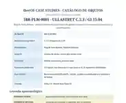

Ficha indexable · IBR-PLM-0001
Plomo de Ullastret
La ficha fija la lectura publicada y registra recurrencias BAITES-/BATI-/S para análisis comparativo y reproducible.

Qué documenta IberOS
Esta página ofrece una puerta de entrada estable y legible para buscadores al objeto IBR-PLM-0001. La ficha científica completa conserva la procedencia, las lecturas editoriales, las fuentes y las hipótesis separadas de los hechos documentales.
Cautela científica: una transliteración o una hipótesis de segmentación no equivale a una traducción demostrada de la lengua ibérica. IberOS publica el grado de incertidumbre y mantiene separadas evidencia, interpretación y predicción.
Fuente y trazabilidad
Fuente de referencia: https://mnamon.sns.it/index.php?id=13&lang=en&page=Esempi